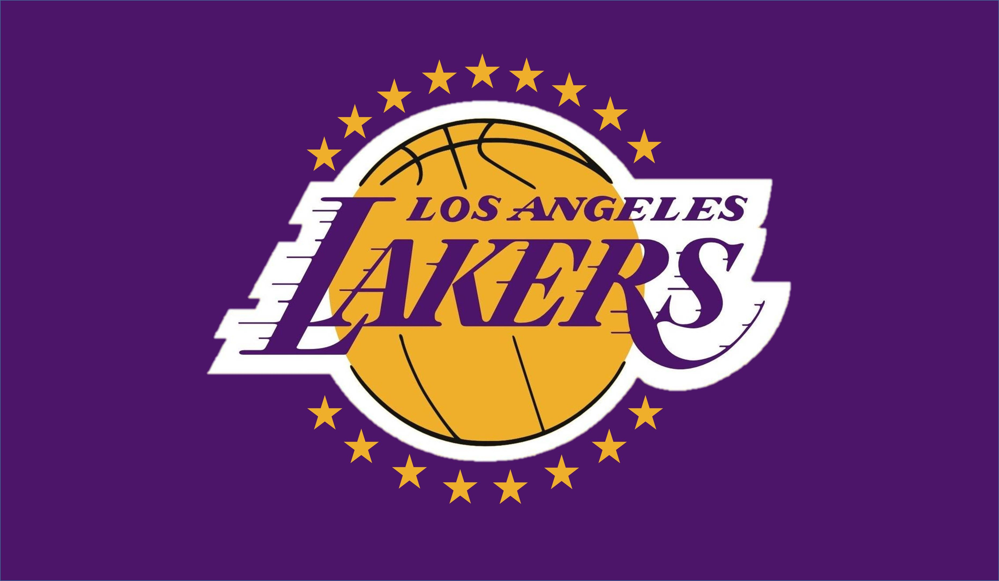
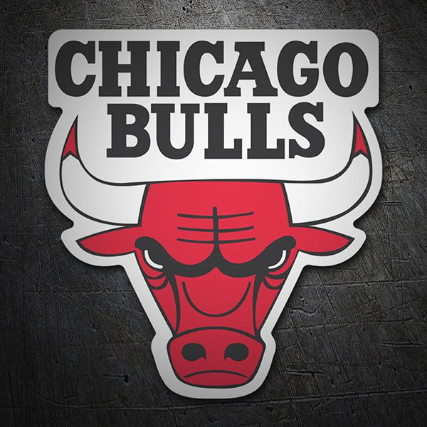
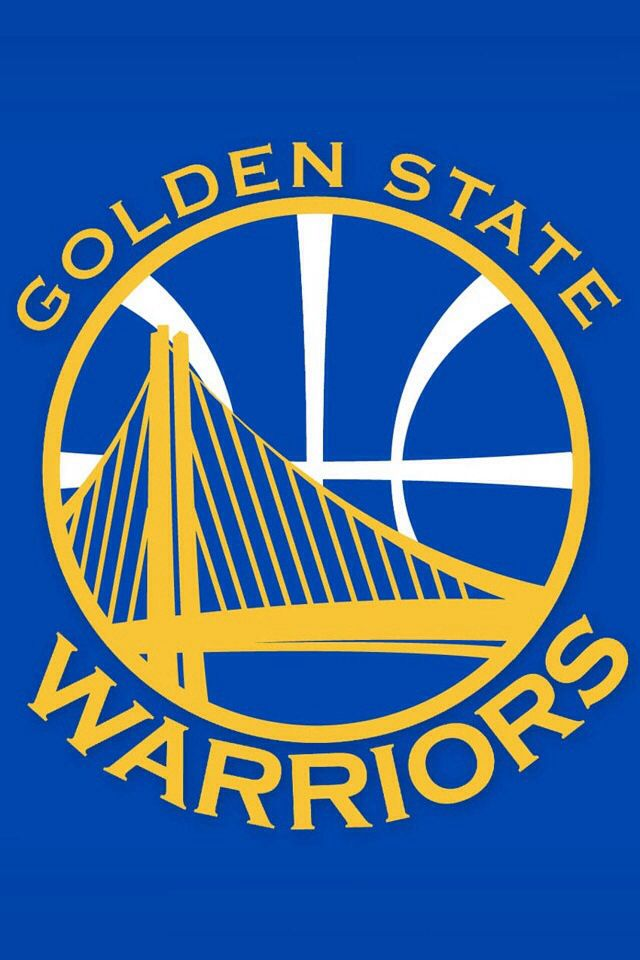

Equipos
Información sobre los equipos de la NBA.

Los Angeles Lakers
Uno de los equipos más exitosos de la NBA, conocido por sus 17 campeonatos.
- Fundado: 1947
- Estadio: Staples Center
- Colores: Púrpura y Oro

Chicago Bulls
Famosos por su dinastía en los años 90 con Michael Jordan.
- Fundado: 1966
- Estadio: United Center
- Colores: Rojo, Negro y Blanco

Golden State Warriors
Conocidos por su estilo de juego rápido y preciso, y sus recientes campeonatos.
- Fundado: 1946
- Estadio: Chase Center
- Colores: Azul y Oro